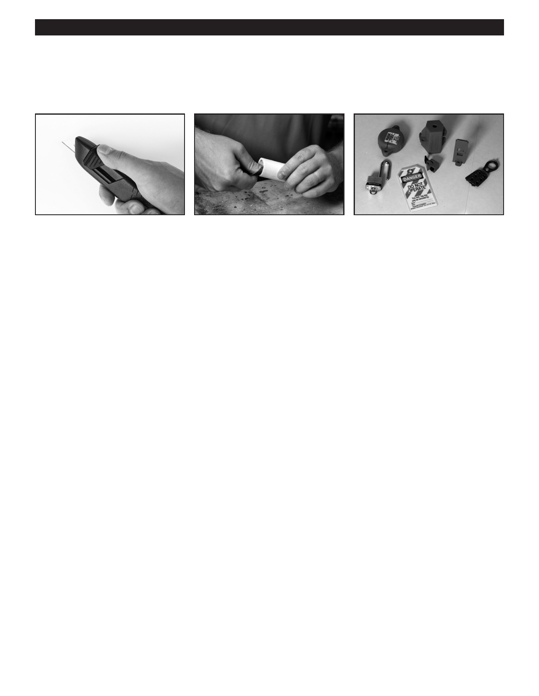

PA RT I C I PA N T R E S O U R C E G U I D E
Key Tools for Plumbing Repairs (continued)
The Basic Hand Tools
A utility knife has a sharp single-edge Files and emery cloth can be used
Lockout/tagout kits should be used
razor that can be use to cut a variety of to smooth the edges of copper or
to identify that a power source, such as
materials.
plastic pipe.
a main shut-off valve or circuit breaker,
is shut off and secured.
Other Hand Tool Recommendations:
10